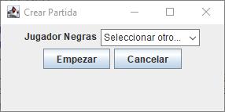

Programa Juego de Ajedrez

Partida rápida
Si pulsamos en dicha opción se nos desplegará una nueva ventana desde la cual podemos
seleccionar los jugadores que van a jugar, estos pueden haber sino previamente creados
o seleccionar alguno ya existente.
Si pulsamos en el botón “Avanzar” (previa selección del jugador), se abrirá una segunda
ventana.
Ésta segunda ventana nos facilita la selección del segundo participante del evento el cual
jugará con las “piezas negras”.
Si pulsamos en “Cancelar” se cerrará la ventana, cancelando todo el proceso y yendo al
menú principal de nuevo.
Si, previa selección del jugador, pulsamos en “Empezar”, se iniciará la partida con los
dos jugadores seleccionados y en sus respectivos colores.